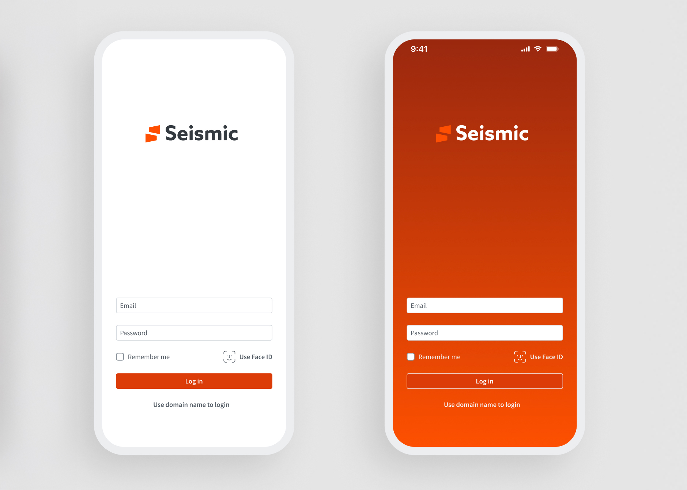
Luis Ponce de León · Portland, OR
Open to new workProduct design for 20+ years.
Depth in UX Strategy Motion Graphics Rich Media Design Systems Product Design
Award-winning and published. I lead medium-to-large UX programs for web and mobile, build the teams that ship them, and have taught the craft at SCAD, Portland State and the Art Institute.
Selected work
Fifteen projects,
one throughline.
Enterprise software, healthcare, construction and travel. The constant is taking something fragmented and making it feel like one thing.
2026
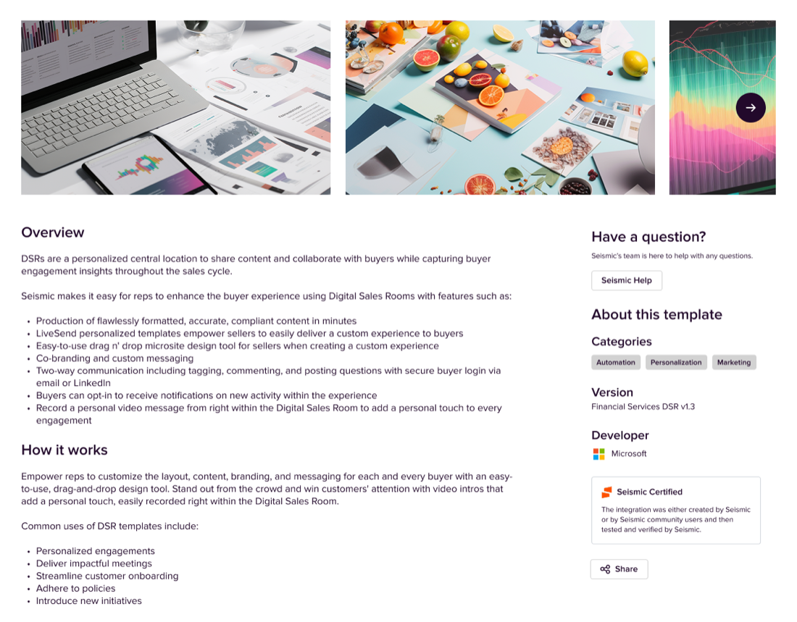
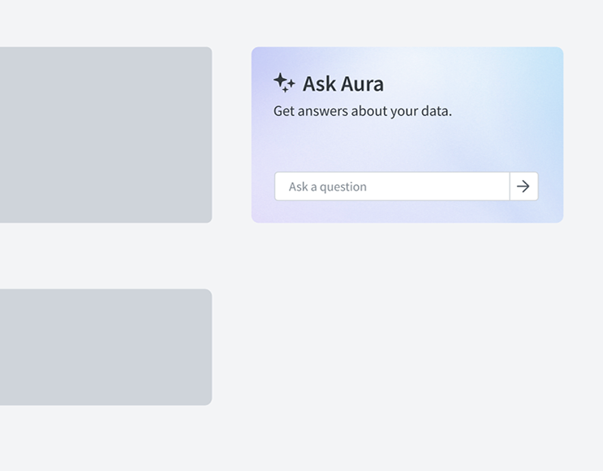


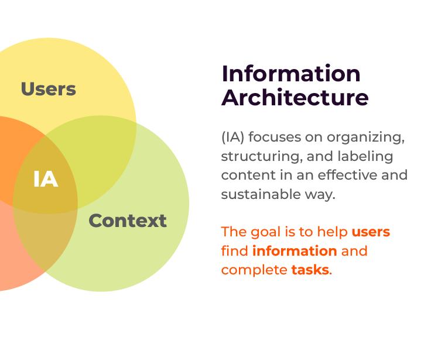
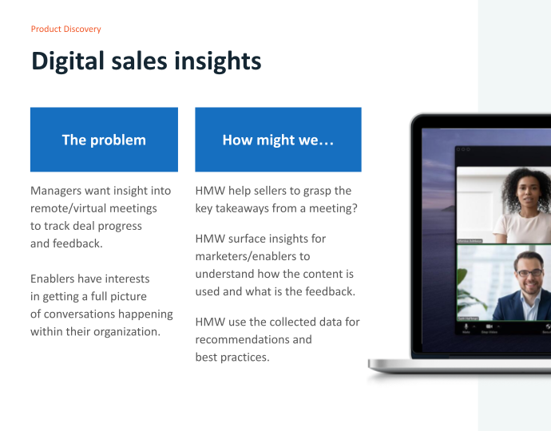
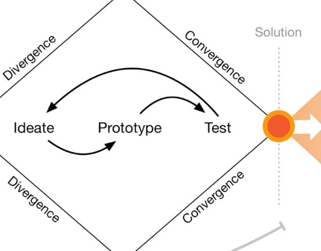
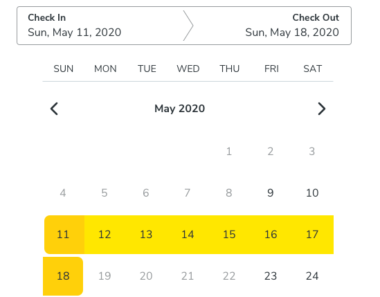


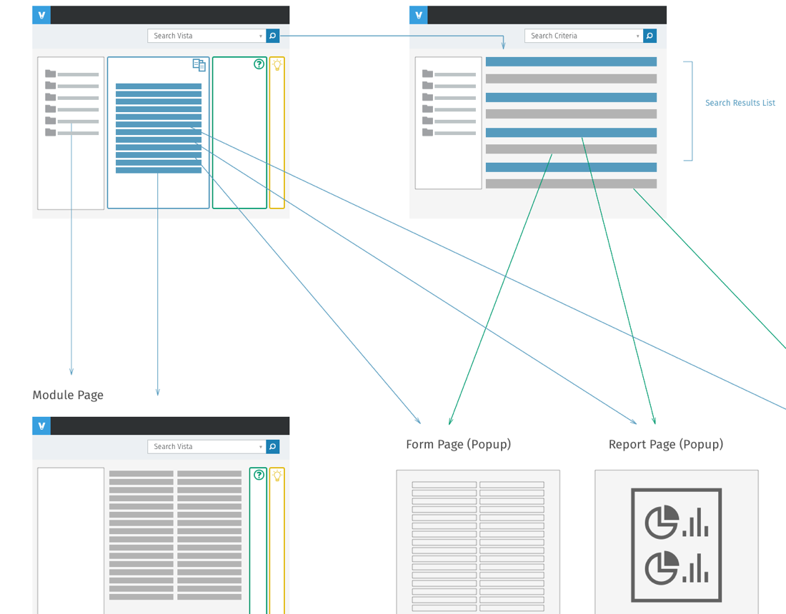
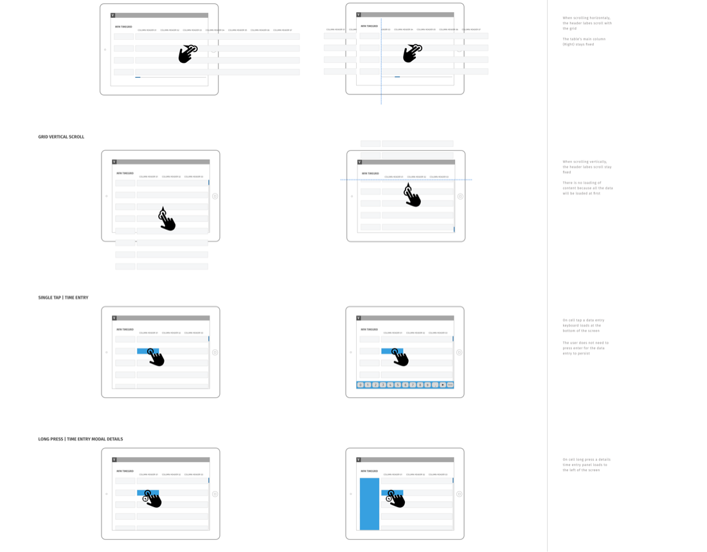
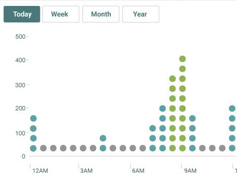

No projects match that filter yet.
Development, AI & craft
I design it.Then I build it.
Most designers hand off a file. I hand off something that already runs — and increasingly, something a user can click on the same day the idea shows up.
Front-end
I've written front-end code for as long as I've designed interfaces, and it changes what I hand engineering. I know what a layout costs before I propose it, I can prototype in the real medium instead of faking it in a design tool, and when I spec an interaction I've usually already built it once. This site is the example — hand-written HTML, CSS and JavaScript, no framework, no build step beyond a small generator.
AI-assisted design & development
AI coding tools moved the finish line. With Claude Code I go from a decision to a working, testable artifact in the time a static prototype used to take. Claude Design and Figma Make close the same gap from the design side — generating real, editable interfaces instead of pictures of them.
What this actually changes is the quality of the conversation. When the thing in front of a stakeholder is running rather than rendered, the feedback stops being about the mockup and starts being about the product.
Certifications
Recent coursework, mostly in AI-assisted design and development.
- Claude Code for Designers Maven Jul 2026
- Introduction to Claude Cowork Anthropic Jul 2026
- Claude Code 101 Anthropic Jun 2026
- Claude 101 Anthropic Jun 2026
- AI-Assisted Coding for Designers Maven Apr 2025
- Learning Microsoft 365 Copilot and Business Chat LinkedIn Jan 2025
- What Is Generative AI? LinkedIn Jan 2025
- Certified Seismic Administrator Seismic Jul 2020
Motion & storytelling
My MFA is in video, and I still edit and animate. It shows up less as showreels than as a way of thinking: an interface has pacing, emphasis and a sequence of reveals whether or not anyone designed them deliberately.
Craft and storytelling are the two ingredients I lean on hardest. Craft is what makes a product feel considered rather than assembled — the timing of a transition, the restraint in a palette, the detail nobody consciously notices. Storytelling is what makes it land — leading with the problem, sequencing the argument, knowing what to cut. Together they turn a functional experience into an engaging and genuinely delightful one, and they are the whole basis of how I communicate work to a team.
Design philosophy
Two lists I actually check work against.
Rams asks whether a thing deserves to exist and whether it is honest about what it is. Nielsen asks whether the person using it can tell what is going on. Good product design has to answer both, so I hold work up to each of them.
Rams' ten principles for good design
Dieter Rams
The standard I hold the object to.
- 01Good design is innovative
- 02Good design makes a product useful
- 03Good design is aesthetic
- 04Good design makes a product understandable
- 05Good design is unobtrusive
- 06Good design is honest
- 07Good design is long-lasting
- 08Good design is thorough down to the last detail
- 09Good design is environmentally friendly
- 10Good design is as little design as possible
Ten usability heuristics for interface design
Jakob Nielsen, Nielsen Norman Group
The standard I hold the interaction to.
- 01Visibility of system status
- 02Match between the system and the real world
- 03User control and freedom
- 04Consistency and standards
- 05Error prevention
- 06Recognition rather than recall
- 07Flexibility and efficiency of use
- 08Aesthetic and minimalist design
- 09Help users recognise, diagnose and recover from errors
- 10Help and documentation
The tenth on each list is the one that costs the most discipline. As little design as possible and aesthetic and minimalist design are both instructions to remove things — and removing is always the harder argument to win in a roadmap meeting.
About
Twenty years of
making it legible.
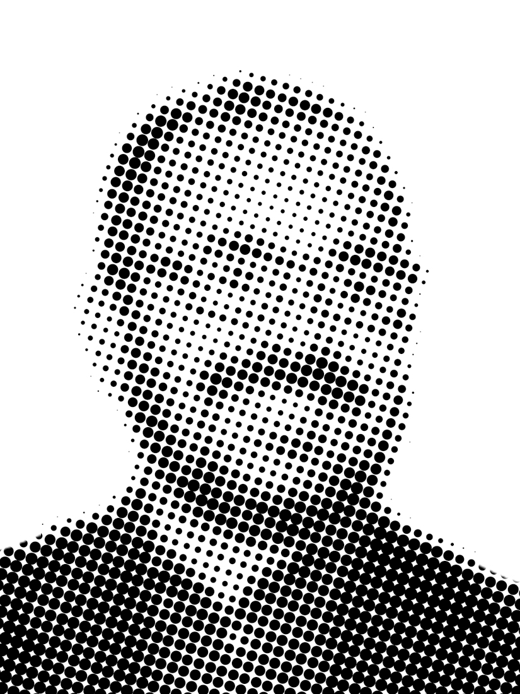
I'm an award-winning, published UX/UI designer with more than twenty years in digital design — and I've spent most of them on the hard, unglamorous end of the field: dense enterprise software, regulated healthcare, and tools people are required to use rather than choose to.
I've worked at Razorfish, Viewpoint Construction Software, WebMD, Vacasa and Seismic, for clients including IBM, Intel, WIRED, the American Red Cross, BlueCross BlueShield and GE. I lead medium-to-large UX projects across web and mobile, run research and testing programs, and mentor the designers around me.
My MFA is in video, which is why motion and rich media keep showing up in my product work — not as decoration, but as the fastest way to explain a system to the person using it. I write my own HTML, CSS and JavaScript, so what I hand engineering is something I already know can be built.
Design & prototyping
Figma · Claude Design · Axure · UXpin · Omnigraffle · Keynote · Visio · Craft
Motion & rich media
After Effects · Premiere · Photoshop · Illustrator · InDesign
AI in the workflow
Claude · ChatGPT · FigJam
Front-end
HTML5 · CSS3 · JavaScript
Practice
Design thinking · Information architecture · User research · Usability testing · Heuristic evaluation · Competitive analysis
Delivery
Agile · Kanban · Lean UX · Jira · TFS · Trello · Asana
MFAVideoSavannah College of Art and Design
BFACommunicationsAmerican University, Washington DC
TeachingUX/UI and VideoSCAD · Portland State University · The Art Institute
Based inPortland, OregonWorking with teams anywhere